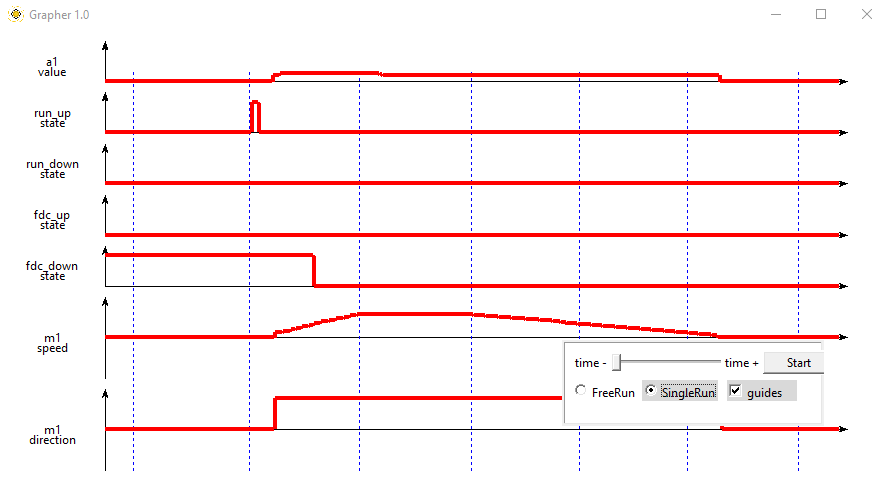
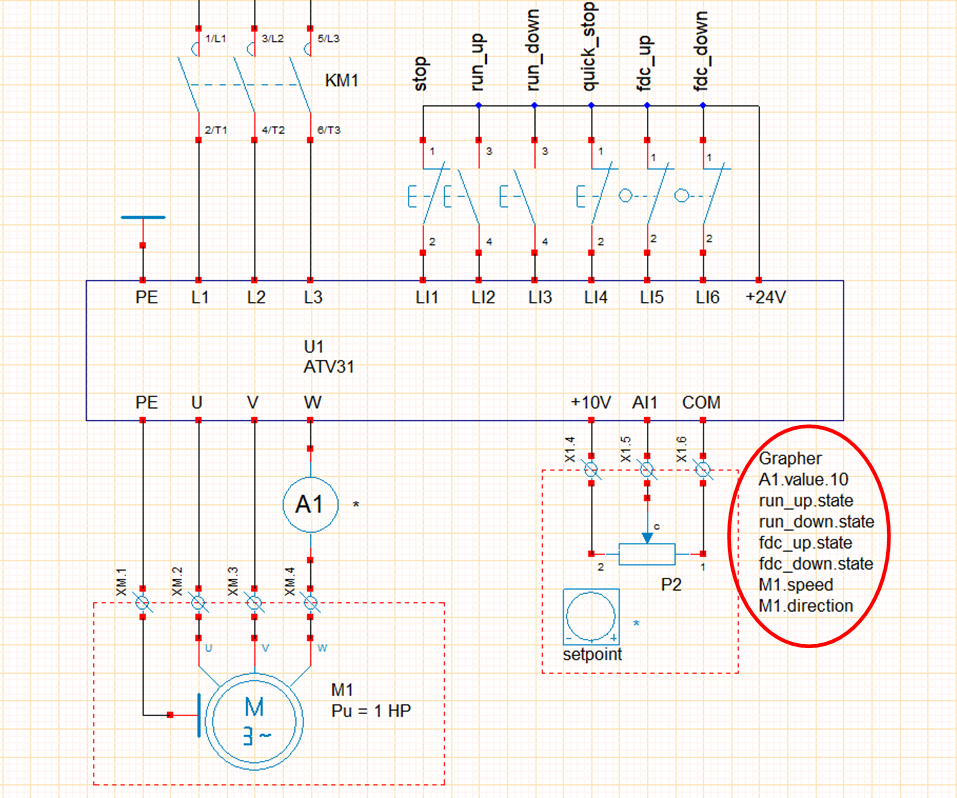
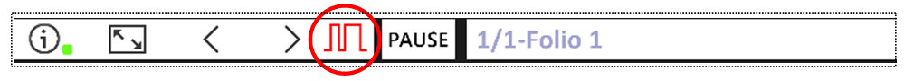

Grapher
This module allows you to draw a chronogram (up to 16 variables) during simulation: 
- You must first prepare the list of variables to be displayed in a text zone edited in WinRelais, for example :
(us19 - demo_Speed_Drive_ATV31_3ph_3C) 
- The first line of the text box must begin with the keyword Grapher,
- this text box can be placed anywhere in the layout,
-
a specific icon appears during simulation if the Grapher text zone is detected, 
-
variable order determines chronogram display order,
- the syntax used to define a variable is : name_object.control[.caliber]
| control | description | example |
|---|---|---|
| state | status active/not active | fdc_haut.state : status of high limit switch |
| speed | motor object speed | M1.speed : M1 motor speed |
| direction | sense of rotation motor object | M1.rotation : direction of rotation of motor M1 |
| value.caliber | measured value and caliber | A1.value.10 : current measured by ammeter A1 calibrated 10 A |